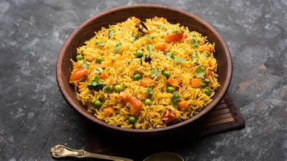
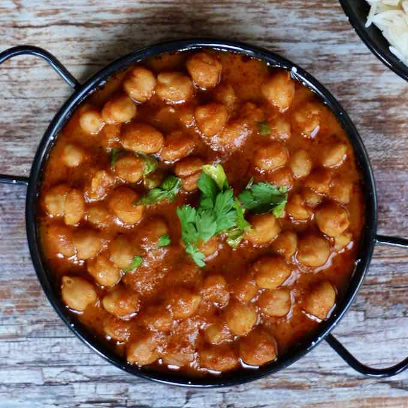
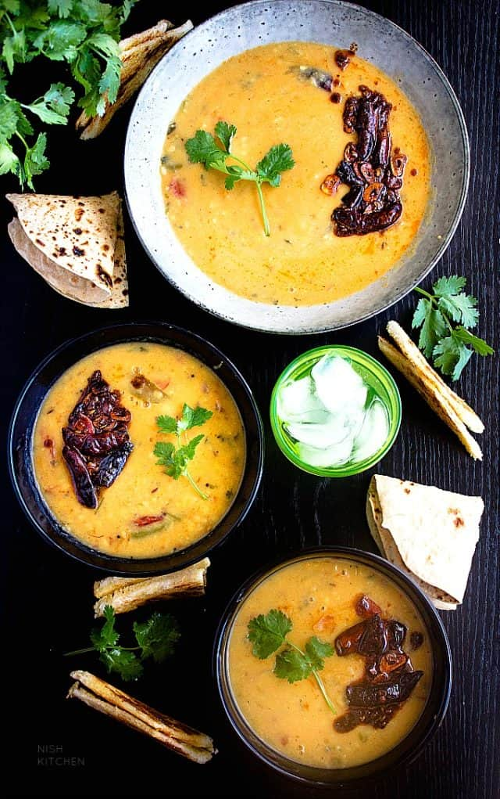

Vegetable Pulao
Approx. 300 calories per serving
Health Benefits: Vegetable pulao is a nutritious dish
made with a variety of vegetables and rice. It provides essential
vitamins, minerals, and carbohydrates for energy.
Ingredients:
- 1 cup basmati rice
- 2 cups mixed vegetables (carrots, peas, beans)
- 1 onion, sliced
- 2 tomatoes, chopped
- 2 cloves garlic, minced
- 1-inch ginger, grated
- 1 teaspoon cumin seeds
- 1 teaspoon turmeric powder
- 1 teaspoon garam masala
- Salt to taste
- Fresh coriander leaves for garnish
Process:
- Wash and soak basmati rice for 30 minutes.
- Heat oil in a pan and add cumin seeds.
- Add sliced onions and sauté until golden brown.
- Add minced garlic and grated ginger. Sauté until fragrant.
-
Add chopped tomatoes, turmeric powder, garam masala, and salt.
Cook until tomatoes are soft.
- Add mixed vegetables and sauté for a few minutes.
- Drain soaked rice and add it to the pan. Mix well.
- Add 2 cups of water and bring to a boil.
-
Reduce heat, cover, and simmer until rice is cooked and water is
absorbed.
- Garnish with fresh coriander leaves before serving.

Chana Masala
Approx. 250 calories per serving
Health Benefits: Chana masala is a protein-rich dish
made with chickpeas and spices. It is high in fiber and may help in
maintaining blood sugar levels.
Ingredients:
- 1 cup chickpeas (kabuli chana), soaked overnight
- 1 onion, finely chopped
- 2 tomatoes, pureed
- 2 green chilies, slit
- 1 teaspoon cumin seeds
- 1 teaspoon coriander powder
- 1/2 teaspoon turmeric powder
- 1/2 teaspoon red chili powder
- 1/2 teaspoon garam masala
- Salt to taste
- Fresh coriander leaves for garnish
Process:
- Pressure cook soaked chickpeas until soft and tender.
- Heat oil in a pan and add cumin seeds.
-
Add chopped onions and sauté until golden brown. with fresh
coriander leaves before serving.

Palak Paneer
Approx. 300 calories per serving
Health Benefits: Palak paneer is a nutritious dish
made with spinach and cottage cheese. It is rich in iron, calcium, and
vitamins.
Ingredients:
- 250g paneer (cottage cheese), cubed
- 1 bunch spinach (palak), washed and chopped
- 1 onion, finely chopped
- 2 tomatoes, chopped
- 2 green chilies, chopped
- 1 teaspoon cumin seeds
- 1 teaspoon ginger-garlic paste
- 1/2 teaspoon turmeric powder
- 1/2 teaspoon garam masala
- Salt to taste
- Fresh cream for garnish
Process:
- Heat oil in a pan and add cumin seeds.
- Add chopped onions and sauté until golden brown.
-
Add ginger-garlic paste and chopped green chilies. Cook until
fragrant.
-
Add chopped tomatoes, turmeric powder, and salt. Cook until
tomatoes are soft.
- Add chopped spinach and cook until wilted.
- Blend the spinach mixture to a smooth paste.
- Return the mixture to the pan and add paneer cubes.
- Add garam masala and simmer for 5-7 minutes.
- Garnish with fresh cream before serving.

Dal Tadka
Approx. 250 calories per serving
Health Benefits: Dal tadka is a comforting dish made
with lentils and tempered with spices. It is high in protein, fiber,
and essential nutrients.
Ingredients:
- 1 cup mixed lentils (masoor dal, moong dal)
- 1 onion, finely chopped
- 2 tomatoes, chopped
- 2 green chilies, slit
- 1 teaspoon cumin seeds
- 1 teaspoon mustard seeds
- 1/2 teaspoon turmeric powder
- 1/2 teaspoon red chili powder
- 1/2 teaspoon garam masala
- Salt to taste
- Fresh coriander leaves for garnish
- Whole wheat roti for serving
Process:
- Wash and pressure cook mixed lentils until soft and mushy.
- Heat oil in a pan and add cumin seeds and mustard seeds.
- Add chopped onions and sauté until golden brown.
-
Add chopped tomatoes, slit green chilies, and spices. Cook until
tomatoes are soft.
-
Add cooked lentils and mix well. Add water if needed to adjust
consistency.
- Simmer for 5-7 minutes, allowing the flavors to blend.
- Garnish with fresh coriander leaves before serving.